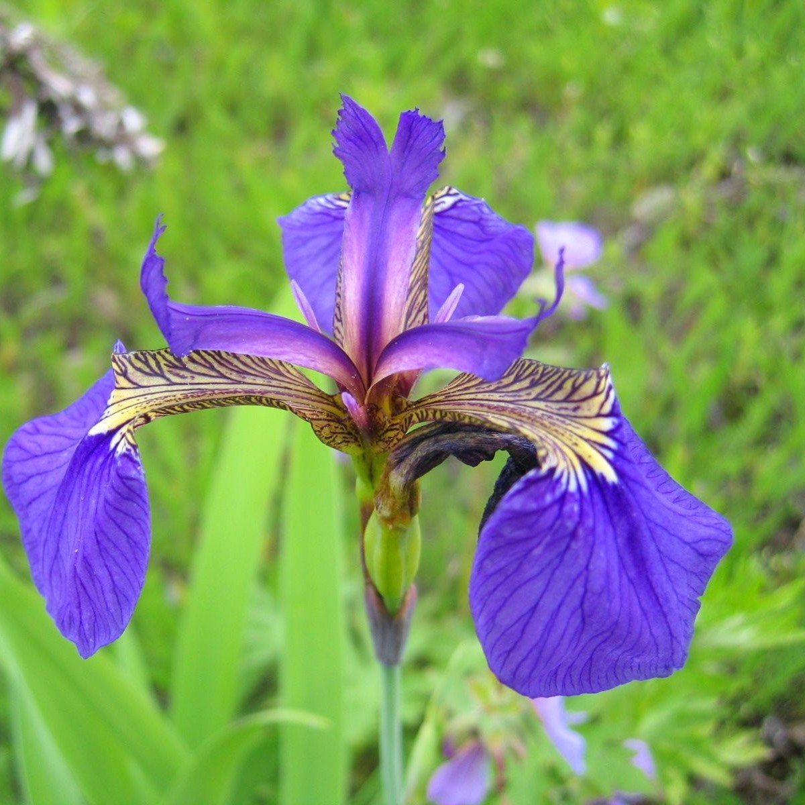

Exercise2.4
Roos Mulder ![]()
The Iris dataset
This data was made infamous by Fisher (1936).
The data
Length and width
Let’s see the relation between petal length and width for the three species
Versicolor vs setosa
Let’s take a closer look at versicolor and setosa irises, how much of a difference can we see in petal length?

Weighted Cohen’s D
To be sure, and without relying on our eyesight, we can calculate the Cohen’s D. This is a metric that expresses the size of the difference between two group means. The formula for Cohen’s D is:
\[\begin{align} D &= \frac{\bar{X_1} \: - \bar{X_2}}{SD_{pooled}} \\ &= \frac{\bar{X_1} \: - \bar{X_2}}{\sqrt{(SD_1^2 \: + SD_2^2)/2}} \end{align}\]
Calculating Cohen’s D
Cohen’s D for petal length in versicolor and setosa irises is:
[1] 7.898544which is very large. This was to be expected, based on what we saw in Table 1: large differences in means and smalls SD’s.
Calculating Cohen’s D in R
# we split the groups first, so we have a dataframe for both species
versicolor <- data |>
filter(Species == "versicolor")
setosa <- data |>
filter(Species == "setosa")
# take means and sd's for both species
v_mean <- mean(versicolor$Petal.Length)
s_mean <- mean(setosa$Petal.Length)
v_sd <- sd(versicolor$Petal.Length)
s_sd <- sd(setosa$Petal.Length)
# and we calculate Cohens D
mean_diff <- v_mean - s_mean
pooled_sd <- sqrt((v_sd^2 + s_sd^2)/2)
cohensd <- mean_diff/pooled_sd
cohensdCitation/reference list
Fisher, R. A. 1936. “THE USE OF MULTIPLE MEASUREMENTS IN TAXONOMIC PROBLEMS.” Annals of Eugenics 7 (2): 179–88. https://doi.org/10.1111/j.1469-1809.1936.tb02137.x.
Make sure we have a reproducible environment (renv)